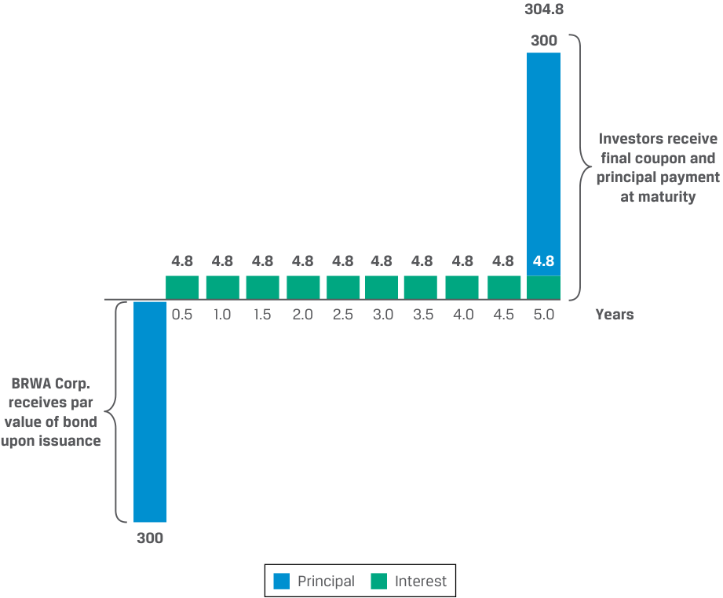
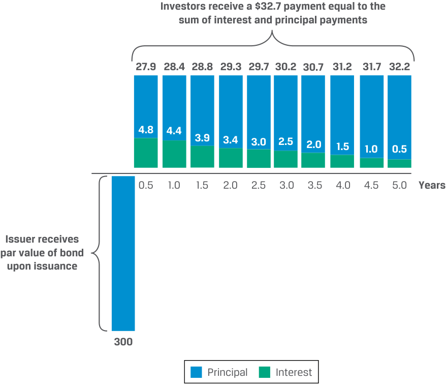
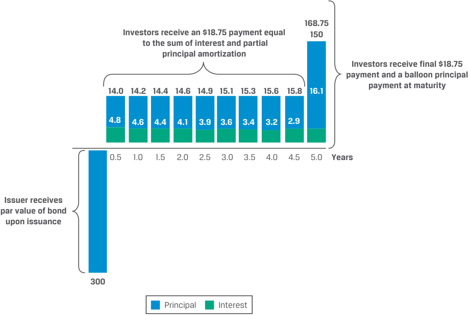
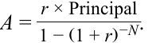
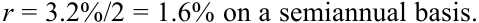
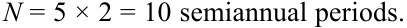
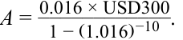
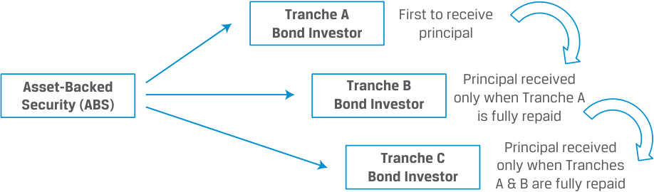
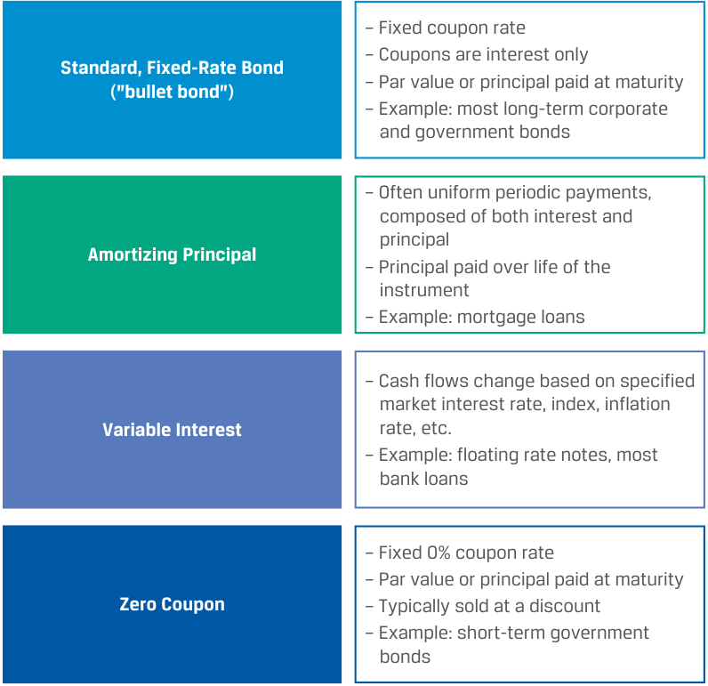

Learning Module 2 Fixed-Income Cash Flows and Types - Part 1: Introduction
Volume 6: Fixed Income
Learning Module 2 Fixed-Income Cash Flows and Types
Part 1/2: Introduction (PDF Pages 33–48)
Tập 6: Chứng Khoán Thu Nhập Cố Định (Fixed Income)
Học Phần 2: Các Dòng Tiền và Phân Loại Công Cụ Thu Nhập Cố Định (Fixed-Income Cash Flows and Types)
Phần 1/2: Giới Thiệu (Trang PDF 33–48)
L E A R N I N G M O D U L E
H Ọ C P H Ầ N
2
2
Fixed-Income Cash Flows and Types
Các Dòng Tiền và Phân Loại Công Cụ Thu Nhập Cố Định (Fixed-Income Cash Flows and Types)
LEARNING OUTCOMES
MỤC TIÊU HỌC TẬP (LEARNING OUTCOMES)
| Mastery | The candidate should be able to: |
|---|---|
| describe common cash flow structures of fixed-income instruments and contrast cash flow contingency provisions that benefit issuers and investors |
|
| describe how legal, regulatory, and tax considerations affect the issuance and trading of fixed-income securities |
| Mức độ thành thạo | Ứng viên cần có khả năng: |
|---|---|
| Mô tả các cấu trúc dòng tiền phổ biến của công cụ thu nhập cố định và phân biệt các điều khoản dự phòng dòng tiền (cash flow contingency provisions) mang lại lợi ích cho tổ chức phát hành và cho nhà đầu tư | |
| Mô tả cách thức các yếu tố pháp lý, quy định quản lý và thuế (legal, regulatory, and tax considerations) ảnh hưởng đến việc phát hành và giao dịch chứng khoán thu nhập cố định |
INTRODUCTION
GIỚI THIỆU (INTRODUCTION)
1
1
A fixed-income instrument’s cash flows are determined by its features. In this module, we discuss common fixed-income instrument cash flow structures and their implications for issuers and investors. The module’s final lesson discusses the legal, regulatory, and tax considerations across jurisdictions faced by fixed-income issuers and investors.
Dòng tiền của một công cụ thu nhập cố định được xác định bởi các đặc điểm của nó. Trong học phần này, chúng ta thảo luận về các cấu trúc dòng tiền phổ biến của công cụ thu nhập cố định và những hàm ý của chúng đối với các tổ chức phát hành cũng như các nhà đầu tư. Bài học cuối cùng của học phần thảo luận về các yếu tố pháp lý, quy định quản lý và thuế giữa các khu vực tài phán khác nhau mà các tổ chức phát hành và nhà đầu tư thu nhập cố định phải đối mặt.
LEARNING MODULE OVERVIEW
TỔNG QUAN HỌC PHẦN (LEARNING MODULE OVERVIEW)
-
In contrast to standard bullet bonds with full principal repayment at maturity, amortizing bonds have a payment schedule that involves early repayment of principal. Sinking funds and waterfall structures represent special cases of amortizing bonds.
-
■ Other coupon payment structures include index-linked bonds that offer payments adjusted for changes in price indices and bonds with step-up coupons, with coupons that increase by specific amounts in the future based on a schedule or subject to specific provisions.
-
■ Fixed-income contingency provisions include call, put, and conversion features. A call feature grants an issuer the right to buy bonds back early at a fixed price, while a put feature grants an investor the right to sell bonds to the issuer at a fixed price prior to maturity. Convertible bonds grant investors the right to convert the bond into shares of the issuer’s stock at a pre-determined price.
-
Trái ngược với các trái phiếu trả gốc một lần khi đáo hạn tiêu chuẩn (standard bullet bonds) với việc hoàn trả toàn bộ vốn gốc khi đáo hạn, các trái phiếu khấu hao dần vốn gốc (amortizing bonds) có lịch trình thanh toán bao gồm việc hoàn trả sớm vốn gốc. Quỹ trả nợ (sinking funds) và cấu trúc thác nước (waterfall structures) đại diện cho các trường hợp đặc biệt của trái phiếu khấu hao dần vốn gốc.
-
Các cấu trúc thanh toán coupon khác bao gồm trái phiếu liên kết chỉ số (index-linked bonds) cung cấp các khoản thanh toán được điều chỉnh theo những thay đổi của chỉ số giá và trái phiếu có lãi suất coupon bậc thang (step-up coupons), với mức lãi suất coupon tăng thêm những khoản cụ thể trong tương lai dựa trên một lịch trình định trước hoặc phụ thuộc vào các điều khoản cụ thể.
-
Các điều khoản dự phòng thu nhập cố định (fixed-income contingency provisions) bao gồm đặc tính mua lại (call), bán lại (put) và chuyển đổi (conversion). Đặc tính mua lại (call feature) trao cho tổ chức phát hành quyền mua lại trái phiếu sớm ở một mức giá cố định, trong khi đặc tính bán lại (put feature) trao cho nhà đầu tư quyền bán lại trái phiếu cho tổ chức phát hành ở một mức giá cố định trước ngày đáo hạn. Trái phiếu chuyển đổi (convertible bonds) trao cho các nhà đầu tư quyền chuyển đổi trái phiếu thành cổ phần phổ thông của tổ chức phát hành ở một mức giá được xác định trước.
-
Bonds can be classified as domestic, foreign, or Eurobonds. Domestic bonds are those issued in a country by an issuer incorporated in that same country, while foreign bonds are issued by entities incorporated elsewhere.
-
Eurobonds are issued internationally in a currency different from that country’s domestic currency (e.g. US dollar bonds issued in London) and are subject to fewer listing, disclosure, and regulatory requirements than domestic or foreign bonds.
-
Bond interest earned by an investor is usually taxed as ordinary income, although some bonds offer tax advantages. Some countries also apply a capital gains tax. Specific tax provisions often apply for bonds issued at a discount or purchased at a premium.
-
Trái phiếu có thể được phân loại thành trái phiếu nội địa (domestic bonds), trái phiếu nước ngoài (foreign bonds), hoặc trái phiếu châu Âu (Eurobonds). Trái phiếu nội địa là những trái phiếu được phát hành tại một quốc gia bởi một tổ chức phát hành được thành lập hợp pháp tại chính quốc gia đó, trong khi trái phiếu nước ngoài được phát hành bởi các thực thể được thành lập ở nơi khác.
-
Trái phiếu châu Âu (Eurobonds) được phát hành trên phạm vi quốc tế bằng một đồng tiền khác với đồng nội tệ của quốc gia nơi phát hành (ví dụ: trái phiếu định danh bằng đô la Mỹ được phát hành tại London) và chịu ít yêu cầu về niêm yết, công bố thông tin và quy định quản lý hơn so với trái phiếu nội địa hoặc trái phiếu nước ngoài.
-
Tiền lãi trái phiếu mà nhà đầu tư kiếm được thường bị đánh thuế như thu nhập thông thường (ordinary income), mặc dù một số trái phiếu mang lại ưu đãi thuế. Một số quốc gia cũng áp dụng thuế lãi vốn (capital gains tax). Các quy định thuế cụ thể thường được áp dụng đối với trái phiếu được phát hành ở mức chiết khấu (issued at a discount) hoặc được mua ở mức phụ trội (purchased at a premium).
LEARNING MODULE SELF-ASSESSMENT
TỰ ĐÁNH GIÁ HỌC PHẦN (LEARNING MODULE SELF-ASSESSMENT)
These initial questions are intended to help you gauge your current level of understanding of this learning module.
Những câu hỏi ban đầu này nhằm mục đích giúp bạn tự đánh giá mức độ hiểu biết hiện tại của mình về học phần này.
- An investor that is more sensitive to an issuer’s credit risk than to reinvesting risk would most likely invest in a:
-
A. bullet bond.
-
B. partially amortizing bond.
-
C. fully amortizing bond.
-
Solution:
- Một nhà đầu tư nhạy cảm với rủi ro tín dụng (credit risk) của tổ chức phát hành hơn là rủi ro tái đầu tư (reinvestment risk) nhiều khả năng nhất sẽ đầu tư vào:
-
A. trái phiếu trả gốc một lần khi đáo hạn (bullet bond).
-
B. trái phiếu khấu hao gốc một phần (partially amortizing bond).
-
C. trái phiếu khấu hao gốc toàn phần (fully amortizing bond).
-
Lời giải:
C is correct. Investors receive higher near-term cash flows on amortizing debt versus bullet bonds and face lower credit risk because the borrower’s liability is reduced over time. However, investors also face the risk of reinvesting the higher near-term cash flows at prevailing market interest rates, which can fluctuate. This effect is larger for fully amortizing bonds versus partially amortizing bonds.
C là đáp án đúng. Các nhà đầu tư nhận được các dòng tiền trong ngắn hạn cao hơn đối với khoản nợ khấu hao dần vốn gốc (amortizing debt) so với trái phiếu trả gốc một lần (bullet bonds) và chịu rủi ro tín dụng thấp hơn bởi vì nghĩa vụ nợ của bên đi vay giảm dần theo thời gian. Tuy nhiên, các nhà đầu tư cũng phải đối mặt với rủi ro tái đầu tư các dòng tiền ngắn hạn cao hơn đó ở mức lãi suất thị trường hiện hành vốn có thể biến động. Hiệu ứng này lớn hơn đối với trái phiếu khấu hao gốc toàn phần so với trái phiếu khấu hao gốc một phần.
2. Match the term in the left column with its description in the right column.
2. Hãy ghép thuật ngữ ở cột bên trái với mô tả của nó ở cột bên phải.
| A. Bullet bond | I. A bond with a fixed periodic payment schedule that reduces the bond’s outstanding principal to a portion of the principal to be repaid on the maturitydate |
|---|---|
| B. Partially amortizing bond | II. A bond with a coupon rate that increases by specified margins at one or more specified dates |
| C. Step-up coupon bond | ii III. A bond that pays its face value and final inter- est payment at maturity |
| Thuật ngữ | Mô tả |
|---|---|
| A. Trái phiếu trả gốc một lần (Bullet bond) | I. Một trái phiếu có lịch trình thanh toán định kỳ cố định làm giảm dư nợ gốc của trái phiếu xuống còn một phần vốn gốc sẽ được hoàn trả vào ngày đáo hạn |
| B. Trái phiếu khấu hao gốc một phần (Partially amortizing bond) | II. Một trái phiếu có lãi suất coupon tăng lên theo các biên độ xác định vào một hoặc nhiều ngày cụ thể |
| C. Trái phiếu có lãi suất coupon bậc thang (Step-up coupon bond) | III. Một trái phiếu thanh toán mệnh giá và khoản tiền lãi cuối cùng khi đáo hạn |
Solution:
Lời giải:
-
A. III is correct. A bullet bond pays 100% of its face value plus a final interest payment at the bond’s maturity.
-
B. I is correct. A bond characterized by a fixed periodic payment schedule that reduces the bond’s outstanding principal to a portion of the principal to be repaid on the maturity date is known as a partially amortizing bond.
-
A. III là đáp án đúng. Một trái phiếu trả gốc một lần (bullet bond) thanh toán 100% mệnh giá của nó cộng với khoản thanh toán lãi cuối cùng tại thời điểm đáo hạn của trái phiếu.
-
B. I là đáp án đúng. Một trái phiếu được đặc trưng bởi lịch trình thanh toán định kỳ cố định làm giảm dư nợ gốc của trái phiếu xuống còn một phần vốn gốc sẽ được hoàn trả vào ngày đáo hạn được gọi là trái phiếu khấu hao gốc một phần (partially amortizing bond).
| C.II is correct. A bond with a coupon rate that increases by specified margins at one or more specified dates is known as a step-up coupon bond. |
|---|
| 3. A call provision embedded in a fixed-income security: A.is a benefit to the issuer. B.gives the bondholder the right but not an obligation to sell the bond. C.grants the bondholder some degree of inflation protection. Solution: A is correct. A call provision gives the issuer the right to redeem all or part of the bond at a pre-determined price on specified dates. It is a benefit to the issuer because if market interest rates fall, the issuer can replace the call- able bond with one with a lower interest rate. It also gives the issuer added flexibility if it has excess cash or wishes to change its capital structure in the future. B is incorrect. This describes a putable bond, not a callable bond. If a call- able bond is called, the bondholder is obliged to sell it to the issuer accord- ing to the specified terms. C is incorrect. A call provision does not grant the bondholder inflation pro- tection. A call would be exercised by the issuer if interest rates fall. |
| 4. A put provision embedded in a fixed-income security: A.is a benefit to the bondholders. B.leads to a lower value compared to a bullet bond. C.increases the likelihood that its issuer will be acquired. Solution: A is correct. A put provision gives bondholders the right to sell the bonds back to the issuer at a pre-determined price on specified dates. The put pro- vision is a benefit to bondholders because it can protect them from the risk of the price of the bond falling from, for example, rising interest rates. B is incorrect. As put provisions are beneficial to investors, putable bonds are priced at a premium, not a discount, relative to option-free counterparts. C is incorrect. Put provisions can deter acquirers because the exercise of putable bonds results in an immediate claim on cash, making the acquisition more expensive. Issuing bonds with put provisions is a strategy employed by some firms to deter unfriendly takeovers known as a “poison puts.” |
- C. II là đáp án đúng. Một trái phiếu có lãi suất coupon tăng lên theo các biên độ xác định vào một hoặc nhiều ngày cụ thể được gọi là trái phiếu có lãi suất coupon bậc thang (step-up coupon bond).
- Một điều khoản mua lại (call provision) đi kèm trong một chứng khoán thu nhập cố định: - A. là một lợi ích đối với tổ chức phát hành (benefit to the issuer). - B. trao cho trái chủ quyền nhưng không phải nghĩa vụ bán lại trái phiếu. - C. trao cho trái chủ một mức độ bảo vệ nhất định trước lạm phát.
- Lời giải:
A là đáp án đúng. Điều khoản mua lại (call provision) trao cho tổ chức phát hành quyền mua lại toàn bộ hoặc một phần trái phiếu ở một mức giá được xác định trước vào các ngày cụ thể. Đó là một lợi ích cho tổ chức phát hành bởi vì nếu lãi suất thị trường giảm xuống, tổ chức phát hành có thể thay thế trái phiếu có thể mua lại (callable bond) bằng một trái phiếu mới có lãi suất thấp hơn. Nó cũng mang lại cho tổ chức phát hành sự linh hoạt bổ sung nếu công ty có tiền mặt dư thừa hoặc muốn thay đổi cấu trúc vốn của mình trong tương lai.
- Match the term in the left column with its description in the right column.
B không đúng. Điều này mô tả một trái phiếu có thể bán lại (putable bond), chứ không phải trái phiếu có thể mua lại (callable bond). Nếu một trái phiếu có thể mua lại bị thực hiện quyền mua lại (called), trái chủ có nghĩa vụ phải bán nó cho tổ chức phát hành theo các điều khoản đã quy định.
C không đúng. Điều khoản mua lại không mang lại cho trái chủ sự bảo vệ trước lạm phát. Quyền chọn mua lại sẽ được tổ chức phát hành thực hiện nếu lãi suất giảm xuống.
- Một điều khoản bán lại (put provision) đi kèm trong một chứng khoán thu nhập cố định: - A. là một lợi ích đối với các trái chủ (benefit to the bondholders). - B. dẫn đến giá trị thấp hơn so với một trái phiếu trả gốc một lần (bullet bond). - C. làm tăng khả năng tổ chức phát hành của nó sẽ bị mua lại/thâu tóm (acquired).
- Lời giải:
| A. Eurobond | I. A bond issued outside the jurisdiction of any single country |
|---|---|
| B. Global bond | II. A bond issued simultaneously in the Eurobond market |
| and in at least one domestic bond market |
A là đáp án đúng. Điều khoản bán lại (put provision) trao cho các trái chủ quyền bán lại trái phiếu cho tổ chức phát hành ở một mức giá được xác định trước vào các ngày cụ thể. Điều khoản bán lại là một lợi ích đối với các trái chủ vì nó có thể bảo vệ họ khỏi rủi ro giá trái phiếu sụt giảm do, chẳng hạn như, lãi suất tăng lên.
B không đúng. Vì điều khoản bán lại có lợi cho các nhà đầu tư, trái phiếu có thể bán lại (putable bonds) được định giá ở mức phụ trội (premium), chứ không phải chiết khấu (discount), so với các trái phiếu tương đương không có quyền chọn (option-free counterparts).
Solution:
C không đúng. Điều khoản bán lại có thể ngăn cản các bên thâu tóm bởi vì việc thực hiện quyền bán lại trái phiếu dẫn đến một yêu cầu thanh toán tiền mặt ngay lập tức, làm cho thương vụ thâu tóm trở nên đắt đỏ hơn. Phát hành trái phiếu kèm theo điều khoản bán lại là một chiến lược được một số doanh nghiệp sử dụng để ngăn chặn các vụ thâu tóm thù địch (unfriendly takeovers), được gọi là “quyền chọn bán độc dược” (“poison puts”).
- Hãy ghép thuật ngữ ở cột bên trái với mô tả của nó ở cột bên phải.
| Thuật ngữ | Mô tả |
|---|---|
| A. Trái phiếu châu Âu (Eurobond) | I. Một trái phiếu được phát hành bên ngoài phạm vi tài phán của bất kỳ quốc gia đơn lẻ nào |
| B. Trái phiếu toàn cầu (Global bond) | II. Một trái phiếu được phát hành đồng thời trên thị trường Eurobond và tại ít nhất một thị trường trái phiếu nội địa |
- A. I is correct. Eurobonds are issued outside the jurisdiction of any single country, are usually unsecured, and may be denominated in any currency, including the issuer’s domestic currency.
Lời giải:
- A. I là đáp án đúng. Trái phiếu châu Âu (Eurobonds) được phát hành bên ngoài phạm vi tài phán của bất kỳ quốc gia đơn lẻ nào, thường là không có đảm bảo (unsecured), và có thể được định danh bằng bất kỳ đồng tiền nào, kể cả đồng nội tệ của tổ chức phát hành.
- B. II is correct. A global bond is a bond issued simultaneously in the Eurobond market and in at least one domestic bond market, ensuring sufficient demand for large bond issues and access to all fixed-income investors regardless of location.
- Compared to a bond with an original issue discount (OID) tax provision, an otherwise identical bond without this provision would most likely have:
-
A. lower taxes due at maturity.
-
B. the same taxes due at maturity.
-
C. higher taxes due at maturity.
-
Solution:
- B. II là đáp án đúng. Một trái phiếu toàn cầu (global bond) là một trái phiếu được phát hành đồng thời trên thị trường Eurobond và tại ít nhất một thị trường trái phiếu nội địa, đảm bảo đủ nhu cầu cho các đợt phát hành trái phiếu quy mô lớn và khả năng tiếp cận tới tất cả các nhà đầu tư thu nhập cố định bất kể vị trí địa lý.
- So với một trái phiếu có điều khoản thuế chiết khấu phát hành gốc (original issue discount – OID tax provision), một trái phiếu giống hệt về mọi mặt khác nhưng không có điều khoản này nhiều khả năng nhất sẽ có:
-
A. mức thuế phải nộp khi đáo hạn thấp hơn.
-
B. mức thuế phải nộp khi đáo hạn bằng nhau.
-
C. mức thuế phải nộp khi đáo hạn cao hơn.
-
Lời giải:
C is correct. Under the OID tax provision, the investor will recognize a prorated portion of the OID as taxable income each year and pay no capital gains tax upon maturity. Investors without an OID tax provision will recognize no taxable income until maturity, upon which they will face capital gains tax on the OID (provided there is capital gains tax in their jurisdiction).
C là đáp án đúng. Theo điều khoản thuế OID, nhà đầu tư sẽ ghi nhận một phần phân bổ theo tỷ lệ (prorated portion) của khoản OID làm thu nhập chịu thuế mỗi năm và không phải nộp thuế lãi vốn khi đáo hạn. Các nhà đầu tư không chịu điều khoản thuế OID sẽ không ghi nhận thu nhập chịu thuế nào cho đến khi đáo hạn, tại thời điểm đó họ sẽ phải chịu thuế lãi vốn đối với toàn bộ khoản OID (với điều kiện có áp dụng thuế lãi vốn tại khu vực tài phán của họ).
2
2
FIXED-INCOME CASH FLOW STRUCTURES
CÁC CẤU TRÚC DÒNG TIỀN CỦA CÔNG CỤ THU NHẬP CỐ ĐỊNH (FIXED-INCOME CASH FLOW STRUCTURES)
describe common cash flow structures of fixed-income instruments and contrast cash flow contingency provisions that benefit issuers and investors
Mục tiêu: Mô tả các cấu trúc dòng tiền phổ biến của công cụ thu nhập cố định và phân biệt các điều khoản dự phòng dòng tiền mang lại lợi ích cho tổ chức phát hành và cho nhà đầu tư.
The most common bond cash flow structure is that of a standard fixed-coupon bond, often referred to as a bullet bond . The bond issuer receives the principal at settlement, makes periodic, fixed coupon payments, and repays the principal at maturity. Most government and corporate issuers use bullet bonds as their primary means of debt financing, and investors often prefer the associated fixed income stream and set maturity to fund known cash flows. Exhibit 1 shows the bullet bond structure of the five-year, USD300 million, 3.2% semiannual coupon BRWA bond introduced in the prior module.
Cấu trúc dòng tiền trái phiếu phổ biến nhất là cấu trúc của một trái phiếu lãi suất coupon cố định tiêu chuẩn, thường được gọi là trái phiếu trả gốc một lần khi đáo hạn (bullet bond). Tổ chức phát hành trái phiếu nhận vốn gốc vào ngày thanh toán giao dịch (settlement), thực hiện các khoản thanh toán coupon cố định định kỳ và hoàn trả vốn gốc khi đáo hạn. Hầu hết các tổ chức phát hành chính phủ và doanh nghiệp đều sử dụng trái phiếu bullet làm phương tiện tài trợ nợ chính của họ, và các nhà đầu tư thường ưa chuộng luồng thu nhập cố định đi kèm cùng ngày đáo hạn cố định để tài trợ cho các dòng tiền đã biết trước. Bảng minh họa 1 (Exhibit 1) cho thấy cấu trúc trái phiếu bullet của trái phiếu BRWA kỳ hạn 5 năm, trị giá 300 triệu USD, trả coupon bán niên 3.2% đã được giới thiệu trong học phần trước.
Exhibit 1: BRWA Corporation Bullet Bond Cash Flows
Bảng minh họa 1: Dòng tiền Trái phiếu Trả gốc một lần (Bullet Bond) của Tập đoàn BRWA

Chú thích hình ảnh: - Thời điểm $0$: Tập đoàn BRWA nhận mệnh giá trái phiếu khi phát hành: $300$ triệu USD (Vốn gốc – Principal). - Các kỳ bán niên $0.5, 1.0, 1.5, 2.0, 2.5, 3.0, 3.5, 4.0, 4.5\text{ năm}$: Nhà đầu tư nhận tiền lãi (Interest) $4.8$ triệu USD mỗi kỳ. - Tại thời điểm đáo hạn $5.0\text{ năm}$: Nhà đầu tư nhận khoản thanh toán coupon cuối cùng ($4.8$) và khoản thanh toán vốn gốc ($300$) khi đáo hạn, tổng cộng là $304.8$ triệu USD.
Some instruments, including most loans, have cash flow structures that differ from that of the bullet bond. For example, some instruments have principal repayments distributed over the life of the instrument. In the case of interest payments, most loans pay periodic interest at a rate that changes as short-term market rates change, while others change based on credit or other provisions. Finally, zero-coupon bonds are sold at a discount with no cash flow during their life until repayment of par at maturity. These bonds pay no periodic interest, but the difference between the discount price and par at maturity represents a cumulative interest payment at maturity.
Một số công cụ, bao gồm hầu hết các khoản vay, có cấu trúc dòng tiền khác với cấu trúc của trái phiếu bullet. Ví dụ, một số công cụ có các khoản hoàn trả vốn gốc được phân bổ trong suốt vòng đời của công cụ. Trong trường hợp thanh toán lãi, hầu hết các khoản vay đều trả lãi định kỳ theo mức lãi suất thay đổi khi lãi suất thị trường ngắn hạn thay đổi, trong khi những công cụ khác thay đổi dựa trên tín dụng hoặc các điều khoản khác. Cuối cùng, trái phiếu không trả lãi định kỳ (zero-coupon bonds) được bán ở mức chiết khấu mà không có dòng tiền nào trong suốt vòng đời của chúng cho đến khi hoàn trả mệnh giá lúc đáo hạn. Những trái phiếu này không trả lãi định kỳ, nhưng phần chênh lệch giữa giá chiết khấu và mệnh giá khi đáo hạn thể hiện một khoản thanh toán lãi tích lũy tại ngày đáo hạn.
Amortizing Debt
Nợ khấu hao dần vốn gốc (Amortizing Debt)
Fixed-income instruments that periodically retire a portion of principal outstanding prior to maturity offer a borrower the ability to spread payments more evenly over the life of the instrument. Examples include commercial or residential real estate mortgage loans. Investors receive higher near-term cash flows on this amortizing debt relative to bullet bonds and face lower credit risk because the borrower’s liability is reduced over time. However, investors also face the risk of reinvesting the higher cash flows at prevailing market interest rates over the life of the instrument, which could decline.
Các công cụ thu nhập cố định định kỳ thanh toán bớt một phần dư nợ gốc trước ngày đáo hạn mang lại cho bên đi vay khả năng dàn trải các khoản thanh toán đồng đều hơn trong suốt vòng đời của công cụ. Các ví dụ bao gồm các khoản vay thế chấp bất động sản thương mại hoặc nhà ở (commercial or residential real estate mortgage loans). Các nhà đầu tư nhận được các dòng tiền ngắn hạn cao hơn đối với khoản nợ khấu hao dần vốn gốc (amortizing debt) này so với trái phiếu bullet và chịu rủi ro tín dụng thấp hơn bởi vì nghĩa vụ nợ của bên đi vay được giảm dần theo thời gian. Tuy nhiên, các nhà đầu tư cũng phải đối mặt với rủi ro tái đầu tư các dòng tiền cao hơn đó ở mức lãi suất thị trường hiện hành trong suốt vòng đời của công cụ, vốn có thể sụt giảm.
Let us consider the opposite of the BRWA five-year bullet bond, a fully amortizing loan for the same term and at the same interest rate. As shown in Exhibit 2, principal amortization begins on the first interest payment date and continues through maturity.
Hãy xem xét trường hợp đối lập với trái phiếu bullet kỳ hạn 5 năm của BRWA, đó là một khoản vay khấu hao gốc toàn phần (fully amortizing loan) có cùng kỳ hạn và cùng mức lãi suất. Như được hiển thị trong Bảng minh họa 2 (Exhibit 2), việc khấu hao vốn gốc bắt đầu vào ngày thanh toán lãi đầu tiên và tiếp tục cho đến khi đáo hạn.
Exhibit 2: BRWA Corporation Fully Amortizing Loan Cash Flows
Bảng minh họa 2: Dòng tiền Khoản vay Khấu hao gốc Toàn phần của Tập đoàn BRWA (BRWA Corporation Fully Amortizing Loan Cash Flows)

Chú thích hình ảnh: - Thời điểm $0$: Tổ chức phát hành nhận mệnh giá trái phiếu/khoản vay khi phát hành: $300$ triệu USD. - Các kỳ bán niên từ $0.5$ đến $5.0\text{ năm}$: Nhà đầu tư nhận một khoản thanh toán cố định $32.7$ triệu USD mỗi kỳ bằng tổng của khoản thanh toán lãi (Interest) và vốn gốc (Principal): - Phần vốn gốc (Principal) tăng dần qua các kỳ: $27.9 \rightarrow 28.4 \rightarrow 28.8 \rightarrow 29.3 \rightarrow 29.7 \rightarrow 30.2 \rightarrow 30.7 \rightarrow 31.2 \rightarrow 31.7 \rightarrow 32.2$. - Phần tiền lãi (Interest) giảm dần qua các kỳ: $4.8 \rightarrow 4.4 \rightarrow 3.9 \rightarrow 3.4 \rightarrow 3.0 \rightarrow 2.5 \rightarrow 2.0 \rightarrow 1.5 \rightarrow 1.0 \rightarrow 0.5$.
Note that while the first interest payment, USD4.8, is identical to that of the bullet bond, instead of interest-only coupons each period followed by the final coupon and principal at maturity, investors receive a uniform USD32.7 periodic cash flow until maturity, which in the first period includes USD27.9 of principal amortization. Over time, the interest portion of the payment declines while the principal repayment portion increases.
Lưu ý rằng mặc dù khoản thanh toán lãi đầu tiên, 4.8 triệu USD, giống hệt như của trái phiếu bullet, nhưng thay vì các khoản coupon chỉ trả lãi mỗi kỳ rồi mới trả coupon cuối cùng và vốn gốc khi đáo hạn, các nhà đầu tư lại nhận được một dòng tiền định kỳ đồng nhất là 32.7 triệu USD cho đến khi đáo hạn, trong đó ở kỳ đầu tiên bao gồm 27.9 triệu USD tiền khấu hao vốn gốc. Theo thời gian, phần tiền lãi trong khoản thanh toán giảm dần trong khi phần hoàn trả vốn gốc tăng lên.
Let us assume instead that BRWA issues a bond with the same maturity and at the same rate but repays a portion of the principal each period, with a final lump sum payment (or balloon payment ) at maturity equal to half of the principal amount. The interest and principal payments for this partially amortizing bond are shown in Exhibit 3.
Thay vào đó, chúng ta hãy giả sử rằng BRWA phát hành một trái phiếu có cùng kỳ hạn và cùng mức lãi suất nhưng chỉ hoàn trả một phần vốn gốc mỗi kỳ, kèm theo một khoản thanh toán gộp một lần cuối cùng (hay khoản thanh toán gốc lớn cuối kỳ – balloon payment) khi đáo hạn bằng một nửa số tiền vốn gốc. Các khoản thanh toán lãi và vốn gốc cho trái phiếu khấu hao gốc một phần (partially amortizing bond) này được hiển thị trong Bảng minh họa 3 (Exhibit 3).
Exhibit 3: BRWA Corporation Partially Amortizing Bond Cash Flows
Bảng minh họa 3: Dòng tiền Trái phiếu Khấu hao gốc Một phần của Tập đoàn BRWA (BRWA Corporation Partially Amortizing Bond Cash Flows)

Chú thích hình ảnh: - Thời điểm $0$: Tổ chức phát hành nhận mệnh giá trái phiếu khi phát hành: $300$ triệu USD. - Các kỳ bán niên từ $0.5$ đến $4.5\text{ năm}$: Nhà đầu tư nhận khoản thanh toán $18.75$ triệu USD bằng tổng của tiền lãi và phần khấu hao vốn gốc một phần: - Phần vốn gốc (Principal): $14.0 \rightarrow 14.2 \rightarrow 14.4 \rightarrow 14.6 \rightarrow 14.9 \rightarrow 15.1 \rightarrow 15.3 \rightarrow 15.6 \rightarrow 15.8$ (và $16.1$ ở kỳ $5.0$). - Phần tiền lãi (Interest): $4.8 \rightarrow 4.6 \rightarrow 4.4 \rightarrow 4.1 \rightarrow 3.9 \rightarrow 3.6 \rightarrow 3.4 \rightarrow 3.2 \rightarrow 2.9$ (và $2.65$ ở kỳ $5.0$). - Tại thời điểm đáo hạn $5.0\text{ năm}$: Nhà đầu tư nhận khoản thanh toán định kỳ cuối cùng $18.75$ triệu USD và khoản thanh toán gốc lớn cuối kỳ (balloon principal payment) $150$ triệu USD, tổng cộng là $168.75$ triệu USD.
The cash flows for the partially amortizing bond combine elements of the bullet and fully amortizing examples. Cash flow schedules from the perspective of the investor for the bullet bond, partially amortizing bond, and fully amortizing loan with the same principal, maturity, and fixed coupon rate are shown in Exhibit 4.
Dòng tiền của trái phiếu khấu hao gốc một phần kết hợp các yếu tố của ví dụ trái phiếu bullet và khoản vay khấu hao gốc toàn phần. Lịch trình dòng tiền dưới góc độ của nhà đầu tư đối với trái phiếu bullet, trái phiếu khấu hao gốc một phần, và khoản vay khấu hao gốc toàn phần có cùng vốn gốc, kỳ hạn và lãi suất coupon cố định được hiển thị trong Bảng minh họa 4 (Exhibit 4).
Exhibit 4: Investor Perspective: BRWA Bond/Loan Cash Flow Summary (USD millions)
Bảng minh họa 4: Góc độ Nhà đầu tư: Tóm tắt Dòng tiền Trái phiếu/Khoản vay BRWA (triệu USD)
| Year | Bullet Bond | Partially Amortizing Bond | Fully Amortizing Loan |
|---|---|---|---|
| 0 | –300 | –300 | –300 |
| 0.5 | 4.8 | 18.75 | 32.7 |
| 1 | 4.8 | 18.75 | 32.7 |
| 1.5 | 4.8 | 18.75 | 32.7 |
| 2 | 4.8 | 18.75 | 32.7 |
| 2.5 | 4.8 | 18.75 | 32.7 |
| 3 | 4.8 | 18.75 | 32.7 |
| 3.5 | 4.8 | 18.75 | 32.7 |
| 4 | 4.8 | 18.75 | 32.7 |
| 4.5 | 4.8 | 18.75 | 32.7 |
| 5 | 304.8 | 168.75 | 32.7 |
| Năm (Year) | Trái phiếu Trả gốc một lần (Bullet Bond) | Trái phiếu Khấu hao gốc Một phần (Partially Amortizing Bond) | Khoản vay Khấu hao gốc Toàn phần (Fully Amortizing Loan) |
|---|---|---|---|
| 0 | –300 | –300 | –300 |
| 0.5 | 4.8 | 18.75 | 32.7 |
| 1 | 4.8 | 18.75 | 32.7 |
| 1.5 | 4.8 | 18.75 | 32.7 |
| 2 | 4.8 | 18.75 | 32.7 |
| 2.5 | 4.8 | 18.75 | 32.7 |
| 3 | 4.8 | 18.75 | 32.7 |
| 3.5 | 4.8 | 18.75 | 32.7 |
| 4 | 4.8 | 18.75 | 32.7 |
| 4.5 | 4.8 | 18.75 | 32.7 |
| 5 | 304.8 | 168.75 | 32.7 |
The fully amortizing loan has a level semiannual payment equal to the sum of interest and principal repayment. We may calculate the periodic payment ( A ) as follows:
Khoản vay khấu hao gốc toàn phần có mức thanh toán bán niên cố định bằng tổng của tiền lãi và hoàn trả vốn gốc. Chúng ta có thể tính toán khoản thanh toán định kỳ ($A$) như sau:
r_ × Principal A = ~~(1)~~ 1 −( 1 + r)−N,
where
trong đó:
A = Periodic payment amount
$A$ = Số tiền thanh toán định kỳ (Periodic payment amount)
r = Market interest rate per period
$r$ = Lãi suất thị trường mỗi kỳ (Market interest rate per period)
Principal = Principal amount of loan or bond
$\text{Principal}$ = Số tiền vốn gốc của khoản vay hoặc trái phiếu (Principal amount of loan or bond)
N = Number of payment periods
$N$ = Số kỳ thanh toán (Number of payment periods)
The fully amortized BRWA bond is a five-year, 3.2% semiannual coupon bond with a par value of USD300 million. The periodic payment is calculated as follows, in millions:
Trái phiếu BRWA khấu hao gốc toàn phần là một trái phiếu kỳ hạn 5 năm, trả coupon bán niên 3.2% với mệnh giá 300 triệu USD. Khoản thanh toán định kỳ được tính như sau, tính theo đơn vị triệu:


Principal = USD300 million.


A = USD32.70.
Do đó, khoản thanh toán bán niên là một mức không đổi 32.70 triệu USD, như được hiển thị trong Bảng minh họa 2, nhưng số tiền gốc và lãi thay đổi qua mỗi kỳ như sau:
Therefore, the semiannual payment is a constant USD32.70, as shown in Exhibit 2, but the principal and interest amounts vary each period as follows:
-
Khoản thanh toán lãi bán niên đầu tiên: $\text{USD } 300 \times 3.2\% / 2 = \text{USD } 4.80$.
-
Khoản hoàn trả vốn gốc ban đầu: $\text{USD } 32.7 - \text{USD } 4.8 = \text{USD } 27.90$.
-
Dư nợ gốc còn lại sau kỳ đầu tiên: $\text{USD } 300 - \text{USD } 27.90 = \text{USD } 272.10$.
-
First semiannual interest payment: USD300 × 3.2%/2 = USD4.80.
-
Initial principal repayment: USD32.7 − USD4.8 = USD27.90.
-
Outstanding principal after first period: USD300 − USD27.90 = USD272.10.
Dư nợ gốc còn lại 272.10 triệu USD trở thành cơ sở để tính toán khoản thanh toán lãi và gốc trong kỳ thứ hai:
The USD272.10 outstanding principal becomes the basis for the calculation of the interest and principal payment in the second period:
-
Khoản thanh toán lãi bán niên thứ hai: $\text{USD } 272.10 \times 3.2\% / 2 = \text{USD } 4.35$.
-
Khoản hoàn trả vốn gốc thứ hai: $\text{USD } 32.70 - \text{USD } 4.35 = \text{USD } 28.35$.
-
Dư nợ gốc còn lại sau kỳ thứ hai: $\text{USD } 272.10 - \text{USD } 28.35 = \text{USD } 243.75$.
-
Second semiannual interest payment: USD272.10 × 3.2%/2 = USD4.35.
-
Second principal repayment: USD32.70 − USD4.35 = 28.35.
-
Outstanding principal after second period: USD272.10 − USD28.35 = USD243.75.
Lưu ý rằng khoản thanh toán định kỳ là không đổi, nhưng theo thời gian, khoản thanh toán lãi giảm xuống trong khi khoản hoàn trả vốn gốc tăng lên.
Note that the periodic payment is constant, but over time, the interest payment decreases while the principal repayment increases.
Trái phiếu khấu hao gốc một phần trong Bảng minh họa 3 với khoản thanh toán gốc lớn cuối kỳ (balloon principal payment) 150 triệu USD được trả khi đáo hạn kết hợp hai yếu tố:
The partially amortized bond in Exhibit 3 with the USD150 balloon principal payment paid at maturity combines two elements:
1. a five-year fully amortizing loan with USD150 notional and
1. một khoản vay khấu hao gốc toàn phần kỳ hạn 5 năm với giá trị danh nghĩa 150 triệu USD và
2. a USD150 balloon payment at maturity.
2. một khoản thanh toán gốc lớn cuối kỳ (balloon payment) 150 triệu USD khi đáo hạn.
The sum of the present values of these two elements is equal to the bond price of USD300. The present value ( PV ) of the USD150 balloon payment is calculated as
Tổng giá trị hiện tại của hai yếu tố này bằng với giá trái phiếu là 300 triệu USD. Giá trị hiện tại ($PV$) của khoản thanh toán balloon 150 triệu USD được tính như sau:
_ PV of balloon payment =USD150( 1.016)10 = USD127.98.
Subtracting the present value of the balloon payment from the USD300 price of the bond gives us USD172 in principal repayment to amortize over 10 semiannual periods to leave a remaining principal of USD150 at maturity. Using this USD172 principal amount, we can compute the periodic payment amount as
Lấy giá 300 triệu USD của trái phiếu trừ đi giá trị hiện tại của khoản thanh toán balloon cho chúng ta 172 triệu USD tiền hoàn trả vốn gốc cần khấu hao trong 10 kỳ bán niên để chừa lại phần vốn gốc còn lại là 150 triệu USD khi đáo hạn. Sử dụng số tiền vốn gốc 172 triệu USD này, chúng ta có thể tính toán số tiền thanh toán định kỳ như sau:
-
-
A =0.016 (USD172) 1 −( 1.016)−10 = USD18.75.
The periodic payment is USD18.75, as shown in Exhibit 3. The final semiannual payment of USD168.75 is the sum of the final constant USD18.75 payment and the outstanding principal amount of USD150. Since the principal amount is not fully amortized, interest payments are higher for the partially amortized bond in each period than for the fully amortized bond, except the first period when they are equal.
Khoản thanh toán định kỳ là 18.75 triệu USD, như được hiển thị trong Bảng minh họa 3. Khoản thanh toán bán niên cuối cùng 168.75 triệu USD là tổng của khoản thanh toán cố định cuối cùng 18.75 triệu USD và dư nợ gốc còn lại 150 triệu USD. Vì số tiền vốn gốc không được khấu hao toàn bộ, các khoản thanh toán lãi của trái phiếu khấu hao gốc một phần cao hơn trong mỗi kỳ so với trái phiếu khấu hao gốc toàn phần, ngoại trừ kỳ đầu tiên khi chúng bằng nhau.
Commercial and residential mortgages are common examples of fully amortizing loans. Mortgage borrowers usually prefer the constant cash flows of fully amortizing loans, because they are better able to match rental or lease income in the case of commercial borrowers or personal income for households. In the United States, these mortgage loans often back bonds known as mortgage-backed securities with cash flows similar to those of the loan shown in Example 1.
Các khoản vay thế chấp thương mại và nhà ở (commercial and residential mortgages) là những ví dụ phổ biến về các khoản vay khấu hao gốc toàn phần. Người đi vay thế chấp thường ưa chuộng các dòng tiền không đổi của các khoản vay khấu hao gốc toàn phần, bởi vì họ có khả năng khớp tốt hơn với thu nhập cho thuê trong trường hợp người đi vay thương mại hoặc thu nhập cá nhân đối với các hộ gia đình. Tại Hoa Kỳ, các khoản vay thế chấp này thường làm tài sản đảm bảo cho các trái phiếu được gọi là chứng khoán đảm bảo bằng thế chấp (mortgage-backed securities – MBS) với các dòng tiền tương tự như dòng tiền của khoản vay được trình bày trong Ví dụ 1.
EXAMPLE 1
VÍ DỤ 1
30-Year Fixed-Rate Residential Mortgage Loan
Khoản vay Thế chấp Nhà ở Lãi suất Cố định Kỳ hạn 30 năm (30-Year Fixed-Rate Residential Mortgage Loan)
A borrower agrees to purchase a home and enters into a mortgage loan with a financial intermediary based on the following terms:
Home price: USD500,000
Một người đi vay đồng ý mua một căn nhà và ký kết một khoản vay thế chấp với một định chế tài chính trung gian dựa trên các điều khoản sau:
Loan amount: USD400,000
Annual interest rate: 3.50%
- Giá nhà (Home price): 500,000 USD
- Số tiền vay (Loan amount): 400,000 USD
- Lãi suất hàng năm (Annual interest rate): 3.50%
- Thời hạn vay (Loan term): 360 tháng
Loan term: 360 months
Noting that the borrower’s monthly interest rate is 0.29167% (= 3.50%/12), we can use Equation 1 to calculate the homeowner’s monthly mortgage payment on the USD400,000 loan as follows:
Lưu ý rằng lãi suất hàng tháng của người đi vay là $0.29167\%$ ($= 3.50\% / 12$), chúng ta có thể sử dụng Phương trình 1 để tính khoản thanh toán thế chấp hàng tháng của chủ nhà đối với khoản vay 400,000 USD như sau:
As in the case of BRWA, we can calculate the interest and principal components of each periodic payment, with the first five and final five monthly payments of the 30-year mortgage shown below.
Giống như trong trường hợp của BRWA, chúng ta có thể tính toán các cấu phần tiền lãi và vốn gốc của mỗi khoản thanh toán định kỳ, với năm khoản thanh toán hàng tháng đầu tiên và năm khoản thanh toán hàng tháng cuối cùng của khoản vay thế chấp 30 năm được hiển thị bên dưới.
| Month | Total Monthly Payment |
Monthly Inter- est Payment |
Monthly Principal Payment |
Remaining Principal |
|---|---|---|---|---|
| 1 | USD1,796.18 | USD1,166.67 | USD629.51 | USD399,370.49 |
| 2 | USD1,796.18 | USD1,164.83 | USD631.35 | USD398,739.14 |
| 3 | USD1,796.18 | USD1,162.99 | USD633.19 | USD398,105.95 |
| 4 | USD1,796.18 | USD1,161.14 | USD635.04 | USD397,470.91 |
| 5 | USD1,796.18 | USD1,159.29 | USD636.89 | USD396,834.03 |
| 356 | USD1,796.18 | USD25.97 | USD1,770.21 | USD7,132.63 |
| 357 | USD1,796.18 | USD20.80 | USD1,775.38 | USD5,357.26 |
| 358 | USD1,796.18 | USD15.63 | USD1,780.55 | USD3,576.70 |
| 359 | USD1,796.18 | USD10.43 | USD1,785.75 | USD1,790.96 |
| 360 | USD1,796.18 | USD5.22 | USD1,790.96 | USD0.00 |
| Tháng (Month) | Tổng thanh toán hàng tháng (Total Monthly Payment) | Thanh toán lãi hàng tháng (Monthly Interest Payment) | Thanh toán gốc hàng tháng (Monthly Principal Payment) | Dư nợ gốc còn lại (Remaining Principal) |
|---|---|---|---|---|
| 1 | USD1,796.18 | USD1,166.67 | USD629.51 | USD399,370.49 |
| 2 | USD1,796.18 | USD1,164.83 | USD631.35 | USD398,739.14 |
| 3 | USD1,796.18 | USD1,162.99 | USD633.19 | USD398,105.95 |
| 4 | USD1,796.18 | USD1,161.14 | USD635.04 | USD397,470.91 |
| 5 | USD1,796.18 | USD1,159.29 | USD636.89 | USD396,834.03 |
| 356 | USD1,796.18 | USD25.97 | USD1,770.21 | USD7,132.63 |
| 357 | USD1,796.18 | USD20.80 | USD1,775.38 | USD5,357.26 |
| 358 | USD1,796.18 | USD15.63 | USD1,780.55 | USD3,576.70 |
| 359 | USD1,796.18 | USD10.43 | USD1,785.75 | USD1,790.96 |
| 360 | USD1,796.18 | USD5.22 | USD1,790.96 | USD0.00 |
Two additional bond amortization arrangements commonly encountered are sinking funds , used primarily by government and some corporate issuers, and waterfall structures , which are commonly used in asset-backed securities (ABS) and mortgage-backed securities (MBS).
Hai thỏa thuận khấu hao trái phiếu bổ sung thường gặp là quỹ trả nợ (sinking funds), được sử dụng chủ yếu bởi các tổ chức phát hành chính phủ và một số tổ chức phát hành doanh nghiệp, và cấu trúc thác nước (waterfall structures), thường được sử dụng trong chứng khoán đảm bảo bằng tài sản (ABS) và chứng khoán đảm bảo bằng thế chấp (MBS).
A sinking fund arrangement is used by issuers to periodically retire a bond’s principal outstanding. The term sinking fund refers to an issuer’s plans to set aside funds over time in an escrow account to retire the bond early based on terms agreed upon issuance. For example, an issuer may direct the bond trustee to redeem a predetermined principal amount selected from among investors at random. Alternatively, the issuer may have the right to repurchase bonds prior to maturity at a predetermined fixed price under a contingency feature addressed later in this lesson. Like amortization, sinking funds reduce credit risk while increasing reinvestment risk due to a reduction of principal outstanding prior to maturity.
Một thỏa thuận quỹ trả nợ (sinking fund arrangement) được các tổ chức phát hành sử dụng để định kỳ thanh toán bớt dư nợ gốc đang lưu hành của trái phiếu. Thuật ngữ quỹ trả nợ (sinking fund) đề cập đến kế hoạch của tổ chức phát hành trong việc dành riêng các khoản tiền theo thời gian vào một tài khoản ký quỹ (escrow account) để thu hồi trái phiếu sớm dựa trên các điều khoản đã thỏa thuận khi phát hành. Ví dụ, một tổ chức phát hành có thể chỉ thị cho bên nhận ủy thác trái phiếu (bond trustee) mua lại một số tiền vốn gốc đã xác định trước được lựa chọn ngẫu nhiên trong số các nhà đầu tư. Ngoài ra, tổ chức phát hành có thể có quyền mua lại trái phiếu trước ngày đáo hạn ở một mức giá cố định xác định trước theo một đặc tính dự phòng sẽ được đề cập ở phần sau của bài học này. Giống như việc khấu hao dần vốn gốc (amortization), quỹ trả nợ làm giảm rủi ro tín dụng đồng thời làm tăng rủi ro tái đầu tư do sự sụt giảm dư nợ gốc đang lưu hành trước khi đáo hạn.
Another structure for principal repayment is a waterfall. This approach is used to determine the timing of cash flows to investor classes with different priority claims to the same cash flows. In the most common form, interest or coupon payments are paid to all classes with no preference, but the repayment of principal occurs sequentially so that the most senior investor class with the highest ranking in the capital structure receives principal payments first, followed by the second-highest ranked investors once the most senior class has been fully repaid. Exhibit 5 shows a typical waterfall structure based on the three-tranche example from the prior module.
Một cấu trúc khác để hoàn trả vốn gốc là cấu trúc thác nước (waterfall). Phương pháp này được sử dụng để xác định thời điểm phân bổ dòng tiền cho các tầng lớp nhà đầu tư có thứ tự ưu tiên đòi nợ khác nhau đối với cùng một nguồn dòng tiền. Ở hình thức phổ biến nhất, các khoản thanh toán lãi hoặc coupon được trả cho tất cả các tầng lớp mà không có sự ưu tiên phân biệt nào, nhưng việc hoàn trả vốn gốc diễn ra tuần tự (sequentially) sao cho tầng lớp nhà đầu tư cấp cao nhất (most senior investor class) có thứ hạng cao nhất trong cấu trúc vốn nhận được các khoản thanh toán vốn gốc đầu tiên, tiếp theo là các nhà đầu tư có thứ hạng cao thứ hai một khi tầng lớp cấp cao nhất đã được hoàn trả đầy đủ. Bảng minh họa 5 (Exhibit 5) cho thấy một cấu trúc thác nước điển hình dựa trên ví dụ ba phân lớp (three-tranche) từ học phần trước.
Exhibit 5: Typical ABS Waterfall Structure
Bảng minh họa 5: Cấu trúc Thác nước ABS Điển hình (Typical ABS Waterfall Structure)

Chú thích hình ảnh: Chứng khoán đảm bảo bằng tài sản (Asset-Backed Security – ABS): - Nhà đầu tư trái phiếu Phân lớp A (Tranche A Bond Investor): Là đối tượng đầu tiên nhận được vốn gốc (First to receive principal). - Nhà đầu tư trái phiếu Phân lớp B (Tranche B Bond Investor): Chỉ nhận được vốn gốc khi Phân lớp A đã được hoàn trả đầy đủ (Principal received only when Tranche A is fully repaid). - Nhà đầu tư trái phiếu Phân lớp C (Tranche C Bond Investor): Chỉ nhận được vốn gốc khi cả Phân lớp A & B đã được hoàn trả đầy đủ (Principal received only when Tranches A & B are fully repaid).
Payment shortfalls are borne by the more junior tranches since the senior tranches are paid first, so Tranche A faces the lowest credit risk, followed by Tranches B and C.
Sự thiếu hụt thanh toán (payment shortfalls) sẽ do các phân lớp thứ cấp hơn (more junior tranches) gánh chịu vì các phân lớp cấp cao (senior tranches) được thanh toán trước, do đó Phân lớp A chịu rủi ro tín dụng thấp nhất, tiếp theo là Phân lớp B và C.
Variable Interest Debt
Nợ có lãi suất biến đổi (Variable Interest Debt)
Some bonds and most loans have variable interest payments, calculated using a market reference rate (MRR) and a credit spread. Financial intermediaries, such as banks, prefer floating-rate loan assets since they match their variable-rate liabilities, such as deposits. Loans or floating-rate notes (FRN) are also attractive to investors seeking to benefit from rising interest rates.
Một số trái phiếu và hầu hết các khoản vay có các khoản thanh toán lãi biến đổi, được tính toán bằng cách sử dụng lãi suất tham chiếu thị trường (MRR) và phần chênh lệch tín dụng (credit spread). Các định chế tài chính trung gian, chẳng hạn như ngân hàng, ưa chuộng các tài sản là khoản vay có lãi suất thả nổi vì chúng khớp với các khoản nợ phải trả có lãi suất biến đổi của họ, chẳng hạn như tiền gửi. Các khoản vay hoặc trái phiếu lãi suất thả nổi (FRN) cũng hấp dẫn đối với các nhà đầu tư đang tìm cách hưởng lợi từ việc lãi suất tăng lên.
Recall that a variable-rate loan or FRN coupon consists of a periodically resetting MRR plus an issuer-specific credit spread.
Hãy nhớ lại rằng một khoản vay lãi suất biến đổi hoặc khoản coupon của FRN bao gồm một mức MRR được thiết lập lại định kỳ cộng với một phần chênh lệch tín dụng đặc thù theo tổ chức phát hành.
FRN coupon = MRR + Credit spread.
For example, practice problems in the prior module highlighted the four-year, EUR250 million Antelas AG FRN issued at an interest rate of MRR + 250 bps p.a. paid quarterly. Exhibit 6 shows the final four Antelas AG FRN cash flows, including principal repayment at maturity similar to a fixed-rate bullet bond.
Ví dụ, các bài tập thực hành trong học phần trước đã làm nổi bật FRN kỳ hạn 4 năm, trị giá 250 triệu EUR của Antelas AG được phát hành ở mức lãi suất $\text{MRR} + 250\text{ bps/năm}$ trả hàng quý. Bảng minh họa 6 (Exhibit 6) cho thấy bốn dòng tiền cuối cùng của FRN Antelas AG, bao gồm việc hoàn trả vốn gốc khi đáo hạn tương tự như một trái phiếu bullet lãi suất cố định.
Exhibit 6: Antelas AG FRN Cash Flows
Bảng minh họa 6: Dòng tiền FRN của Antelas AG (Antelas AG FRN Cash Flows)
| Note Prin | cipal Amou | nt (EUR) | 250,000,000 | |
|---|---|---|---|---|
| Credit Spr | ead over M | RR | 2.50% | |
| Quarter | MRR | Coupon Rate |
Quarterly Inter- est Payment |
Principal Payment |
| 13 | –0.50% | 2.00% | 1,250,000 | |
| 14 | 0.15% | 2.65% | 1,656,250 | |
| 15 | 0.25% | 2.75% | 1,718,750 | |
| 16 | 0.50% | 3.00% | 1,875,000 | 250,000,000 |
| Thông tin trái phiếu | Giá trị | |||
|---|---|---|---|---|
| Mệnh giá gốc trái phiếu (EUR) | 250,000,000 | |||
| Chênh lệch tín dụng trên MRR (Credit Spread over MRR) | 2.50% | |||
| Quý (Quarter) | MRR | Lãi suất Coupon (Coupon Rate) | Thanh toán lãi hàng quý (Quarterly Interest Payment) | Thanh toán vốn gốc (Principal Payment) |
| 13 | –0.50% | 2.00% | 1,250,000 | |
| 14 | 0.15% | 2.65% | 1,656,250 | |
| 15 | 0.25% | 2.75% | 1,718,750 | |
| 16 | 0.50% | 3.00% | 1,875,000 | 250,000,000 |
For example, in Quarter 15, the coupon rate is 2.75% (= 0.25% + 2.50%) and the quarterly interest payment is calculated as follows:
Ví dụ, trong Quý 15, lãi suất coupon là $2.75\%$ ($= 0.25\% + 2.50\%$) và khoản thanh toán lãi hàng quý được tính như sau:
(2.75% × EUR250,000,000)/4 = EUR1,718,750.
Investors face less interest rate risk with variable-rate instruments because coupon payments adjust with interest rates, unlike fixed-coupon bonds. However, like fixed-coupon bonds, variable-rate instruments still have credit risk: If an issuer’s likelihood of missing payments increases, investors will seek a higher yield as compensation for lower credit quality, causing their price to fall, irrespective of any changes in the MRR.
Các nhà đầu tư chịu ít rủi ro lãi suất (interest rate risk) hơn đối với các công cụ có lãi suất biến đổi bởi vì các khoản thanh toán coupon điều chỉnh theo lãi suất, không giống như trái phiếu có lãi suất coupon cố định. Tuy nhiên, giống như trái phiếu có lãi suất coupon cố định, các công cụ có lãi suất biến đổi vẫn có rủi ro tín dụng (credit risk): Nếu khả năng bỏ lỡ thanh toán của tổ chức phát hành tăng lên, các nhà đầu tư sẽ đòi hỏi một mức lợi suất cao hơn để bù đắp cho chất lượng tín dụng thấp hơn, khiến giá của chúng sụt giảm, bất kể mọi sự thay đổi của MRR.
In addition to changing cash flows based on variations in MRR, other adjustment mechanisms exist, which can be either predetermined or tied to an event. In the case of predetermined adjustments, a bond coupon increases by specified margins at specified dates. These bonds are referred to as step-up bonds and are used to protect investors against rising rates and, in some cases, to provide an incentive for issuers to take advantage of a contingency provision, as addressed later. An example of cash flow changes based on an event are higher coupons in the event of a deterioration in an issuer’s credit quality. This provides investors with greater comfort that they will be compensated for adverse credit changes and allows less creditworthy issuers to obtain debt financing for longer and/or at lower spreads than may be possible at a fixed coupon. This is most common with leveraged loans , or loans to issuers of lower credit quality. Coupon changes may also be linked to financial covenants or credit ratings, which are sometimes used in what are referred to as credit-linked notes .
Ngoài việc thay đổi dòng tiền dựa trên các biến động của MRR, còn tồn tại các cơ chế điều chỉnh khác, có thể được xác định trước (predetermined) hoặc gắn với một sự kiện (tied to an event). Trong trường hợp các điều chỉnh được xác định trước, lãi suất coupon của trái phiếu tăng lên theo các biên độ cụ thể vào các ngày cụ thể. Những trái phiếu này được gọi là trái phiếu có lãi suất bậc thang (step-up bonds) và được sử dụng để bảo vệ các nhà đầu tư trước lãi suất tăng và, trong một số trường hợp, để tạo động lực cho các tổ chức phát hành tận dụng một điều khoản dự phòng, như sẽ đề cập ở phần sau. Một ví dụ về những thay đổi dòng tiền dựa trên một sự kiện là mức lãi suất coupon cao hơn trong trường hợp chất lượng tín dụng của tổ chức phát hành bị suy giảm. Điều này mang lại cho các nhà đầu tư sự an tâm lớn hơn rằng họ sẽ được đền bù cho những thay đổi tín dụng bất lợi và cho phép các tổ chức phát hành có mức độ tín nhiệm thấp hơn huy động được nguồn tài trợ nợ với kỳ hạn dài hơn và/hoặc ở mức chênh lệch thấp hơn so với mức có thể đạt được với lãi suất coupon cố định. Điều này phổ biến nhất đối với các khoản vay có đòn bẩy cao (leveraged loans), tức là các khoản vay dành cho các tổ chức phát hành có chất lượng tín dụng thấp hơn. Những thay đổi về lãi suất coupon cũng có thể được liên kết với các điều khoản cam kết tài chính hoặc xếp hạng tín dụng, đôi khi được sử dụng trong những công cụ được gọi là trái phiếu liên kết tín dụng (credit-linked notes).
For example, say that Antelas AG experiences a decline in its credit quality as the FRN matures. It must therefore adequately address investor credit concerns by revising the terms of its debt. Exhibit 7 shows how Antelas might achieve this by entering a loan agreement arranged by a bank with a credit spread that adjusts based on leverage and interest coverage ratios.
Ví dụ, giả sử rằng Antelas AG trải qua sự sụt giảm về chất lượng tín dụng khi FRN đáo hạn. Do đó, công ty phải giải quyết thỏa đáng những lo ngại về tín dụng của nhà đầu tư bằng cách sửa đổi các điều khoản nợ của mình. Bảng minh họa 7 (Exhibit 7) cho thấy cách Antelas có thể đạt được điều này bằng cách ký kết một thỏa thuận vay do ngân hàng thu xếp với mức chênh lệch tín dụng điều chỉnh dựa trên tỷ số đòn bẩy và tỷ số khả năng thanh toán lãi vay.
Exhibit 7: Antelas AG Leveraged Loan Term Sheet
Bảng minh họa 7: Bản điều khoản Khoản vay Đòn bẩy của Antelas AG (Antelas AG Leveraged Loan Term Sheet)
| Antelas AG Five-Year Leveraged Loan Term Sheet |
|
|---|---|
| Issuer: | Antelas AG |
| Settlement Date: | [T + 3 Business Days] |
| Maturity Date: | [Five Years from Settlement Date] |
| Principal Amount: | EUR250 million |
| Interest: | MRR Plus Credit Spread |
| Điều khoản | Khoản vay Đòn bẩy Kỳ hạn 5 năm của Antelas AG Bản điều khoản (Term Sheet) |
|---|---|
| Tổ chức phát hành (Issuer): | Antelas AG |
| Ngày thanh toán giao dịch (Settlement Date): | [T + 3 Ngày làm việc] |
| Ngày đáo hạn (Maturity Date): | [5 năm kể từ Ngày thanh toán giao dịch] |
| Mệnh giá gốc (Principal Amount): | 250 triệu EUR |
| Tiền lãi (Interest): | MRR cộng Chênh lệch tín dụng (Credit Spread) |
| Antelas AG Five-Year Leveraged Loan Term Sheet |
|
|---|---|
| Interest Payment: | Commencing three months from [Settlement Date] to be paid quarterly with final payment on [Maturity Date] |
| Credit Spread: | Based on Issuer’s Total Leverage Ratio (TLR) at the end of each quarter as follows: 325 bps p.a. if TLR ≥ 3.5× 300 bps p.a. if 3.5× > TLR ≥ 3.0× 275 bps p.a. if 3.0× > TLR ≥ 2.5× 250 bps p.a. if TLR ≤ 2.5× |
| Seniority: | The Loan is a secured, unsubordinated obligation of Antelas AG. |
| Debt Restriction Test: | Issuer must maintain (a) Total Leverage Ratio (Net Interest Bearing Debt to EBITDA) not greater than 5.00× and (b) Interest Coverage Ratio greater than 2.50× for each financial reporting period. |
| Điều khoản | Khoản vay Đòn bẩy Kỳ hạn 5 năm của Antelas AG Bản điều khoản (Term Sheet – tiếp theo) |
|---|---|
| Thanh toán lãi (Interest Payment): | Bắt đầu 3 tháng kể từ [Ngày thanh toán giao dịch], được trả hàng quý với khoản thanh toán cuối cùng vào [Ngày đáo hạn] |
| Chênh lệch tín dụng (Credit Spread): | Dựa trên Tổng tỷ số đòn bẩy (Total Leverage Ratio – TLR) của Tổ chức phát hành vào cuối mỗi quý như sau: $325\text{ bps/năm}$ nếu $\text{TLR} \ge 3.5\times$ $300\text{ bps/năm}$ nếu $3.5\times > \text{TLR} \ge 3.0\times$ $275\text{ bps/năm}$ nếu $3.0\times > \text{TLR} \ge 2.5\times$ $250\text{ bps/năm}$ nếu $\text{TLR} \le 2.5\times$ |
| Mức độ ưu tiên trả nợ (Seniority): | Khoản vay là nghĩa vụ có đảm bảo, không phải nợ thứ cấp của Antelas AG. |
| Bài kiểm tra hạn chế nợ (Debt Restriction Test): | Tổ chức phát hành phải duy trì (a) Tổng tỷ số đòn bẩy (Nợ ròng chịu lãi trên EBITDA) không lớn hơn $5.00\times$ và (b) Tỷ số khả năng thanh toán lãi vay lớn hơn $2.50\times$ cho mỗi kỳ báo cáo tài chính. |
Antelas maintains its current credit spread only if its total leverage ratio remains below 2.5×, with a higher spread if leverage increases. An issuer concerned about potential cash flow problems in the future might seek to add a payment-in-kind (PIK) feature to a loan or bond. PIK features allow an issuer to pay periodic interest in the form of an increase in the bond or loan principal outstanding rather than as a cash payment. This feature is most frequently used by firms with relatively high reliance on debt financing and are usually associated with a higher interest rate to compensate investors assuming greater principal risk.
Antelas chỉ duy trì được mức chênh lệch tín dụng hiện tại nếu tổng tỷ số đòn bẩy của công ty giữ ở mức dưới $2.5\times$, và chịu mức chênh lệch cao hơn nếu đòn bẩy tăng lên. Một tổ chức phát hành lo ngại về các vấn đề dòng tiền tiềm ẩn trong tương lai có thể tìm cách bổ sung một đặc tính thanh toán bằng hiện vật / gốc hóa lãi (payment-in-kind – PIK) vào một khoản vay hoặc trái phiếu. Đặc tính PIK cho phép tổ chức phát hành trả lãi định kỳ dưới hình thức làm tăng thêm dư nợ gốc đang lưu hành của trái phiếu hoặc khoản vay thay vì thanh toán bằng tiền mặt. Đặc tính này thường được sử dụng nhất bởi các doanh nghiệp có sự phụ thuộc tương đối cao vào tài trợ nợ và thường đi kèm với mức lãi suất cao hơn để đền bù cho các nhà đầu tư gánh chịu rủi ro vốn gốc lớn hơn.
As the following box example shows, the use of variable bond coupon provisions is not limited to issuers with credit quality or cash flow issues.
Như ví dụ đóng khung sau đây cho thấy, việc sử dụng các điều khoản lãi suất coupon trái phiếu biến đổi không chỉ giới hạn ở các tổ chức phát hành gặp vấn đề về chất lượng tín dụng hoặc dòng tiền.
PUBLIC POWER CORPORATION (PPC) SUSTAINABILITY-LINKED BOND
TRÁI PHIẾU LIÊN KẾT BỀN VỮNG CỦA PUBLIC POWER CORPORATION (PPC) (PUBLIC POWER CORPORATION SUSTAINABILITY-LINKED BOND)
Fixed-income markets have rapidly adapted to the growing importance of environmental, social, and governance (ESG) factors among issuers and investors. For example, green bonds are fixed-income instruments usually issued by governments or private companies that are created to fund projects with a positive environmental impact.
Các thị trường thu nhập cố định đã nhanh chóng thích ứng với tầm quan trọng ngày càng tăng của các yếu tố môi trường, xã hội và quản trị (ESG) đối với các tổ chức phát hành và nhà đầu tư. Ví dụ, trái phiếu xanh (green bonds) là các công cụ thu nhập cố định thường được phát hành bởi các chính phủ hoặc các công ty tư nhân được tạo ra để tài trợ cho các dự án có tác động tích cực đến môi trường.
Public Power Corporation (PPC) is a publicly traded company that is 51% owned by the Greek government and is Greece’s largest electricity utility. PPC announced plans to close most of its coal power capacity to sharply reduce carbon emissions, increase renewable energy production, and modernize and partially privatize its power grid. In order to attract a broader investor base to provide debt financing for its ambitious plans, PPC issued sustainability-linked bonds in early 2021 based on the following terms:
Public Power Corporation (PPC) là một công ty đại chúng có niêm yết với 51% cổ phần thuộc sở hữu của chính phủ Hy Lạp và là công ty điện lực lớn nhất của Hy Lạp. PPC đã công bố kế hoạch đóng cửa hầu hết công suất nhiệt điện than của mình để cắt giảm mạnh lượng khí thải carbon, tăng sản lượng năng lượng tái tạo, đồng thời hiện đại hóa và tư nhân hóa một phần lưới điện của mình. Nhằm thu hút một cơ sở nhà đầu tư rộng lớn hơn để cung cấp nguồn tài trợ nợ cho các kế hoạch đầy tham vọng của mình, PPC đã phát hành trái phiếu liên kết bền vững (sustainability-linked bonds) vào đầu năm 2021 dựa trên các điều khoản sau:
| Public Powe | r Corporation Five-Year Sustainability-Linked Bonds Key Terms |
|---|---|
| Issuer: | Public Power Corporation S.A. |
| Settlement Date: | March 18, 2021 |
| Maturity Date: | March 30, 2026 |
| Principal | EUR775 million |
| Amount: | |
| Interest: | 3.875% p.a. |
| Step-Up Margin: | 50 bps p.a. if a Step-Up Event occurs |
| Điều khoản | Trái phiếu Liên kết Bền vững Kỳ hạn 5 năm của Public Power Corporation Các điều khoản chính (Key Terms) |
|---|---|
| Tổ chức phát hành (Issuer): | Public Power Corporation S.A. |
| Ngày thanh toán giao dịch (Settlement Date): | 18 tháng 3 năm 2021 |
| Ngày đáo hạn (Maturity Date): | 30 tháng 3 năm 2026 |
| Mệnh giá gốc (Principal Amount): | 775 triệu EUR |
| Tiền lãi (Interest): | 3.875%/năm (p.a.) |
| Biên độ lãi suất bậc thang (Step-Up Margin): | 50 bps/năm nếu Sự kiện tăng lãi suất (Step-Up Event) xảy ra |
| Public Power | Corporation Five-Year Sustainability-Linked Bonds Key Terms |
|---|---|
| Step-Up Event: | Issuer fails to reduce CO2emissions by 40% by December 2022 versus 2019 base year |
| Interest Payment: | Commencing 9/30/21 to be paid semiannually with final payment on the Maturity Date |
| Seniority: | The Notes are senior unsecured obligations of the Issuer |
| Điều khoản | Trái phiếu Liên kết Bền vững Kỳ hạn 5 năm của Public Power Corporation Các điều khoản chính (Key Terms – tiếp theo) |
|---|---|
| Sự kiện tăng lãi suất (Step-Up Event): | Tổ chức phát hành không giảm được lượng khí thải $\text{CO}_2$ ở mức 40% vào tháng 12 năm 2022 so với năm cơ sở 2019 |
| Thanh toán lãi (Interest Payment): | Bắt đầu từ 30/9/2021, được trả bán niên với khoản thanh toán cuối cùng vào Ngày đáo hạn |
| Mức độ ưu tiên trả nợ (Seniority): | Trái phiếu là các nghĩa vụ cấp cao không có đảm bảo (senior unsecured obligations) của Tổ chức phát hành |
PPC’s sustainability-linked bonds were the first of its kind for a European high-yield issuer. The CO2-related step-up margin feature in PPC’s bonds was a significant factor in attracting widespread investor demand in a transaction that exceeded the original EUR500 million planned size.
Trái phiếu liên kết bền vững của PPC là loại trái phiếu đầu tiên thuộc dạng này đối với một tổ chức phát hành lợi suất cao (high-yield issuer) tại châu Âu. Đặc tính biên độ lãi suất bậc thang liên quan đến $\text{CO}_2$ trong trái phiếu của PPC là một yếu tố quan trọng trong việc thu hút nhu cầu rộng rãi của nhà đầu tư trong một giao dịch vượt xa quy mô dự kiến ban đầu là 500 triệu EUR.
Index-linked bonds have interest and/or principal payments linked to a specified index. Although a bond may be linked to any variable, in practice, inflation-linked bonds (sometimes referred to as linkers) tied to a broad consumer price index are by far the most common type of index-linked bonds. The fixed interest and principal payments of a standard bond are nominal cash flows whose purchasing power declines with inflation. The interest rate a bondholder receives net of inflation is the real interest rate, which is approximately equal to the nominal interest rate minus the rate of inflation. Investors often use inflation-linked bonds to protect against rising prices by receiving inflation-adjusted cash flows. Most inflation-linked bonds are issued by sovereign governments. Examples include Treasury Inflation-Protected Securities (TIPS) in the United States, which address investor demand for inflation-indexed cash flows. There is also growing demand for inflation-linked emerging market bonds due to investor concerns over high inflation. The following example demonstrates how TIPS cash flows are adjusted for inflation.
Trái phiếu liên kết chỉ số (index-linked bonds) có các khoản thanh toán lãi và/hoặc vốn gốc được liên kết với một chỉ số xác định. Mặc dù một trái phiếu có thể được liên kết với bất kỳ biến số nào, nhưng trên thực tế, trái phiếu liên kết lạm phát (inflation-linked bonds, đôi khi được gọi là linkers) gắn với một chỉ số giá tiêu dùng rộng lớn cho đến nay là loại trái phiếu liên kết chỉ số phổ biến nhất. Các khoản thanh toán lãi và vốn gốc cố định của một trái phiếu tiêu chuẩn là các dòng tiền danh nghĩa (nominal cash flows) có sức mua suy giảm theo lạm phát. Lãi suất mà một trái chủ nhận được sau khi trừ đi lạm phát là lãi suất thực (real interest rate), xấp xỉ bằng lãi suất danh nghĩa trừ đi tỷ lệ lạm phát. Các nhà đầu tư thường sử dụng trái phiếu liên kết lạm phát để bảo vệ trước tình trạng giá cả tăng cao bằng cách nhận các dòng tiền đã được điều chỉnh theo lạm phát. Hầu hết các trái phiếu liên kết lạm phát được phát hành bởi các chính phủ quốc gia. Các ví dụ bao gồm Chứng khoán Kho bạc Bảo vệ khỏi Lạm phát (Treasury Inflation-Protected Securities – TIPS) tại Hoa Kỳ, đáp ứng nhu cầu của nhà đầu tư đối với các dòng tiền được gắn chỉ số lạm phát. Cũng có nhu cầu ngày càng tăng đối với trái phiếu thị trường mới nổi liên kết lạm phát do lo ngại của nhà đầu tư về lạm phát cao. Ví dụ sau đây minh họa cách thức các dòng tiền của TIPS được điều chỉnh theo lạm phát.
EXAMPLE 2
VÍ DỤ 2
TIPS Cash Flow
Dòng tiền của TIPS (TIPS Cash Flow)
An investor purchases TIPS with the following terms:
Một nhà đầu tư mua TIPS với các điều khoản sau:
| Principal amount: | USD115,000,000 |
|---|---|
| Semiannual coupon: | 1.00% p.a. |
| Time to maturity: | 9.5 years |
| Inflation protection: | Based on the change in the Consumer Price Index for All Urban Consumers: All Items in U.S. City Average, Not Seasonally Adjusted (CPI) |
| Điều khoản | Chi tiết |
|---|---|
| Mệnh giá gốc (Principal amount): | USD 115,000,000 |
| Lãi suất coupon bán niên (Semiannual coupon): | 1.00%/năm (p.a.) |
| Thời gian đáo hạn (Time to maturity): | 9.5 năm |
| Bảo vệ lạm phát (Inflation protection): | Dựa trên sự thay đổi của Chỉ số Giá Tiêu dùng cho Tất cả Người tiêu dùng Đô thị: Tất cả các Mặt hàng theo Trung bình Thành phố Hoa Kỳ, Không điều chỉnh theo mùa vụ (Consumer Price Index – CPI) |
If the CPI rises from 265.00 to 267.25 over the next semiannual interest period, the next coupon payment is calculated as follows:
Nếu CPI tăng từ 265.00 lên 267.25 trong kỳ tính lãi bán niên tiếp theo, khoản thanh toán coupon tiếp theo được tính như sau:
-
Inflation adjustment: (267.25 − 265) / 265 = 0.849%.
-
Inflation-adjusted principal = Principal amount × (1 + Inflation adjustment) = USD115,976,350 = USD115,000,000 × 1.00849.
-
Annual interest expense = Coupon rate × Inflation-adjusted principal, or = 1.00% × USD115,976,350 = USD1,159,764.
-
Semiannual interest paid = USD1,159,764/2 = USD579,882.
-
Điều chỉnh lạm phát (Inflation adjustment): $(267.25 - 265) / 265 = 0.849\%$.
-
Vốn gốc đã điều chỉnh theo lạm phát (Inflation-adjusted principal) $= \text{Mệnh giá gốc} \times (1 + \text{Điều chỉnh lạm phát}) = \text{USD } 115,000,000 \times 1.00849 = \text{USD } 115,976,350$.
-
Chi phí lãi hàng năm (Annual interest expense) $= \text{Lãi suất coupon} \times \text{Vốn gốc đã điều chỉnh theo lạm phát} = 1.00\% \times \text{USD } 115,976,350 = \text{USD } 1,159,764$.
-
Tiền lãi bán niên được trả (Semiannual interest paid) $= \text{USD } 1,159,764 / 2 = \text{USD } 579,882$.
TIPS, which have a periodic principal adjustment based on a price index, are an example of a capital-indexed bond . This approach protects the real value of debt principal. Capital-indexed bonds are also issued by other sovereign governments, including those of Australia, Canada, and the United Kingdom. Note that while deflation causes the principal to decline over time, investors usually receive the greater of the inflation-adjusted principal or par at maturity.
TIPS, vốn có sự điều chỉnh vốn gốc định kỳ dựa trên một chỉ số giá, là một ví dụ về trái phiếu gắn chỉ số vào vốn gốc (capital-indexed bond). Phương pháp này bảo vệ giá trị thực của vốn gốc khoản nợ. Trái phiếu gắn chỉ số vào vốn gốc cũng được phát hành bởi các chính phủ quốc gia khác, bao gồm Úc, Canada và Vương quốc Anh. Lưu ý rằng mặc dù giảm phát (deflation) khiến vốn gốc giảm xuống theo thời gian, các nhà đầu tư thường nhận được mức cao hơn giữa vốn gốc đã điều chỉnh theo lạm phát và mệnh giá gốc (par) khi đáo hạn.
Unlike capital-indexed bonds, interest-indexed bonds pay a fixed nominal principal amount at maturity. Only the coupon is index linked and pays an inflation adjustment. These bonds are essentially an FRN in which the MRR is the rate of inflation. Interest-indexed bonds are more commonly issued by private financial intermediaries than by governments.
Không giống như trái phiếu gắn chỉ số vào vốn gốc, trái phiếu gắn chỉ số vào tiền lãi (interest-indexed bonds) trả một số tiền vốn gốc danh nghĩa cố định khi đáo hạn. Chỉ có khoản coupon là được liên kết với chỉ số và trả phần điều chỉnh lạm phát. Những trái phiếu này về bản chất là một FRN trong đó MRR chính là tỷ lệ lạm phát. Trái phiếu gắn chỉ số vào tiền lãi thường được phát hành bởi các định chế tài chính trung gian tư nhân hơn là bởi các chính phủ.
Zero-Coupon Structures
Cấu trúc Trái phiếu Không trả lãi định kỳ (Zero-Coupon Structures)
Zero-coupon bonds repay principal at maturity but have no coupon payments. Zero-coupon bonds are often referred to as discount bonds, since they are priced below par if interest rates are positive. An investor’s sole source of return is the difference between the price paid and the principal, which represents a cumulative interest payment at maturity. Zero-coupon bonds are commonly issued by governments with tenors less than 12 months. As sovereign interest rates fell to (or below) zero in the wake of global financial crisis in 2008, zero-coupon bonds also became more common at longer maturities. Zero-coupon bonds are also created by financial intermediaries that sell individual interest or principal payments separated (or stripped) from sovereign bullet bonds.
Trái phiếu không trả lãi định kỳ (zero-coupon bonds) hoàn trả vốn gốc khi đáo hạn nhưng không có các khoản thanh toán coupon. Trái phiếu không trả lãi định kỳ thường được gọi là trái phiếu chiết khấu (discount bonds), vì chúng được định giá dưới mệnh giá nếu lãi suất là số dương. Nguồn tỷ suất sinh lợi duy nhất của nhà đầu tư là phần chênh lệch giữa mức giá đã trả và vốn gốc, đại diện cho một khoản thanh toán lãi tích lũy tại ngày đáo hạn. Trái phiếu không trả lãi định kỳ thường được các chính phủ phát hành với kỳ hạn dưới 12 tháng. Khi lãi suất trái phiếu chính phủ giảm xuống bằng (hoặc thấp hơn) mức không sau cuộc khủng hoảng tài chính toàn cầu năm 2008, trái phiếu không trả lãi định kỳ cũng trở nên phổ biến hơn ở các kỳ hạn dài hơn. Trái phiếu không trả lãi định kỳ cũng được tạo ra bởi các định chế tài chính trung gian thông qua việc bán các khoản thanh toán lãi hoặc vốn gốc riêng lẻ được tách ra (separated hay stripped) từ các trái phiếu bullet của chính phủ.
Zero-coupon bonds are useful for funding fixed future obligations. If interest rates fall, a standard fixed-rate bond may fall short of meeting the obligation because falling interest rates reduce reinvestment income (in other words, the investor’s rate of return will fall below the original YTM because the reinvestment assumption at the YTM does not hold). Since zero-coupon bonds require no coupon reinvestment, investors in these bonds do not face this risk.
Trái phiếu không trả lãi định kỳ rất hữu ích để tài trợ cho các nghĩa vụ cố định trong tương lai. Nếu lãi suất giảm xuống, một trái phiếu lãi suất cố định tiêu chuẩn có thể không đáp ứng đủ nghĩa vụ đó bởi vì lãi suất giảm làm giảm thu nhập tái đầu tư (nói cách khác, tỷ suất sinh lợi thực tế của nhà đầu tư sẽ giảm xuống dưới mức YTM ban đầu bởi vì giả định tái đầu tư ở mức YTM không còn đúng nữa). Vì trái phiếu không trả lãi định kỳ không đòi hỏi việc tái đầu tư coupon, nên các nhà đầu tư vào những trái phiếu này không phải đối mặt với rủi ro này.
Deferred Coupon Structures
Cấu trúc Trái phiếu Trả lãi chậm (Deferred Coupon Structures)
Deferred coupon bonds pay no interest for the first few years and have a higher coupon paid later through maturity. Issuers of deferred coupon bonds usually seek to conserve cash immediately following the bond issue, which may indicate lower credit quality or that the issuer is financing a construction project that does not generate income until completion. Similar to zero-coupon bonds, which may be considered an extreme form of deferred coupon bond, deferred coupon bonds are typically priced at a discount to par since the higher coupon is not usually sufficient to offset the forgone interest in earlier periods.
Trái phiếu trả lãi chậm (deferred coupon bonds) không trả lãi trong vài năm đầu tiên và có mức coupon cao hơn được trả sau đó cho đến khi đáo hạn. Các tổ chức phát hành trái phiếu trả lãi chậm thường tìm cách bảo toàn tiền mặt ngay sau đợt phát hành trái phiếu, điều này có thể cho thấy chất lượng tín dụng thấp hơn hoặc tổ chức phát hành đang tài trợ cho một dự án xây dựng chưa tạo ra thu nhập cho đến khi hoàn thành. Tương tự như trái phiếu không trả lãi định kỳ (vốn có thể được coi là một dạng cực đoan của trái phiếu trả lãi chậm), trái phiếu trả lãi chậm thường được định giá ở mức chiết khấu so với mệnh giá vì mức coupon cao hơn sau đó thường không đủ để bù đắp cho phần tiền lãi bị bỏ qua trong các kỳ đầu tiên.
Exhibit 8 summarizes the common types of cash flow structures for fixed-income instruments.
Bảng minh họa 8 (Exhibit 8) tóm tắt các loại cấu trúc dòng tiền phổ biến đối với các công cụ thu nhập cố định.
Exhibit 8: Fixed-Income Instrument Cash Flow Structures
Bảng minh họa 8: Các Cấu trúc Dòng tiền của Công cụ Thu nhập Cố định (Fixed-Income Instrument Cash Flow Structures)

Chú thích hình ảnh: 1. Trái phiếu lãi suất cố định tiêu chuẩn (Standard, Fixed-Rate Bond – “bullet bond”): - Lãi suất coupon cố định (Fixed coupon rate) - Các khoản coupon chỉ bao gồm tiền lãi (Coupons are interest only) - Mệnh giá hoặc vốn gốc được trả khi đáo hạn (Par value or principal paid at maturity) - Ví dụ: hầu hết các trái phiếu doanh nghiệp và chính phủ dài hạn 2. Khấu hao vốn gốc (Amortizing Principal): - Thường là các khoản thanh toán định kỳ đồng nhất, bao gồm cả tiền lãi và vốn gốc (Often uniform periodic payments, composed of both interest and principal) - Vốn gốc được trả dần trong suốt vòng đời của công cụ (Principal paid over life of the instrument) - Ví dụ: các khoản vay thế chấp (mortgage loans) 3. Lãi suất biến đổi (Variable Interest): - Dòng tiền thay đổi dựa trên lãi suất thị trường, chỉ số, tỷ lệ lạm phát xác định, v.v. (Cash flows change based on specified market interest rate, index, inflation rate, etc.) - Ví dụ: trái phiếu lãi suất thả nổi (floating rate notes), hầu hết các khoản vay ngân hàng (most bank loans) 4. Không trả lãi định kỳ (Zero Coupon): - Lãi suất coupon cố định 0% (Fixed 0% coupon rate) - Mệnh giá hoặc vốn gốc được trả khi đáo hạn (Par value or principal paid at maturity) - Thường được bán ở mức chiết khấu (Typically sold at a discount) - Ví dụ: trái phiếu chính phủ ngắn hạn (short-term government bonds)
| QUESTION SET |
|---|
| 1. Compared to a bullet bond, an otherwise identical amortizing bond would_most likely_have: |
| A.lower credit risk. |
| B.lower reinvestment risk. |
| C.lower near-term cash flows. Solution: |
| A is correct. Compared to a bullet bond, an otherwise identical amortizing bond would have early principal repayments each period instead of all prin- cipal paid at maturity, lowering exposure to the issuers credit risk. However, larger periodic payments increase reinvestment risk. |
| 2. Calculate the periodic payment and the interest and principal components of the first payment for a fully amortizing bond based on the following: |
| ■ Loan amount: USD10,000,000 |
| ■ Annual interest rate: 2.75% |
| ■ Loan term: 10 semiannual periods (5 years) |
| Solution: |
| UsingEquation 1: |
BỘ CÂU HỎI (QUESTION SET)
- So với một trái phiếu trả gốc một lần (bullet bond), một trái phiếu khấu hao dần vốn gốc (amortizing bond) giống hệt về mọi mặt khác nhiều khả năng nhất sẽ có: - A. rủi ro tín dụng thấp hơn (lower credit risk). - B. rủi ro tái đầu tư thấp hơn (lower reinvestment risk). - C. dòng tiền ngắn hạn thấp hơn (lower near-term cash flows).
- Lời giải:
A là đáp án đúng. So với một trái phiếu bullet, một trái phiếu khấu hao dần vốn gốc giống hệt về mọi mặt khác sẽ có các khoản hoàn trả vốn gốc sớm vào mỗi kỳ thay vì toàn bộ vốn gốc được trả khi đáo hạn, làm giảm mức độ phơi nhiễm với rủi ro tín dụng của tổ chức phát hành. Tuy nhiên, các khoản thanh toán định kỳ lớn hơn làm tăng rủi ro tái đầu tư.
- Tính khoản thanh toán định kỳ cùng các cấu phần tiền lãi và vốn gốc của khoản thanh toán đầu tiên đối với một trái phiếu khấu hao gốc toàn phần dựa trên thông tin sau: - Số tiền vay (Loan amount): 10,000,000 USD - Lãi suất hàng năm (Annual interest rate): 2.75% - Thời hạn vay (Loan term): 10 kỳ bán niên (5 năm)
- Lời giải:
Sử dụng Phương trình 1:
~~~~ _r × Principal A = 1 −( 1 + r)−N,
trong đó:
where
$r = 1.375\%$ ($= 2.75\% / 2$)
r = 1.375% (= 2.75%/2) Principal = USD10,000,000
$\text{Principal} = \text{USD } 10,000,000$
N = 10
Solve for the periodic payment ( A ) as follows:
$N = 10$
- USD1, 077, 174 = _______( 0.01375) × (10, 000, 000). 1 −( 1.01375)−10
Giải tìm khoản thanh toán định kỳ ($A$) như sau:
The initial USD1,077,174 periodic payment comprises the following:
Khoản thanh toán định kỳ ban đầu 1,077,174 USD bao gồm:
-
Initial interest payment: USD10,000,000 × 1.375% = USD137,500.
-
Initial principal repayment: USD1,077,174 − USD137,500 = USD939,674.
- Describe how a decrease in the consumer price index would affect the next coupon payment of a capital-indexed inflation-linked bond.
-
Khoản thanh toán lãi ban đầu: $\text{USD } 10,000,000 \times 1.375\% = \text{USD } 137,500$.
-
Khoản hoàn trả vốn gốc ban đầu: $\text{USD } 1,077,174 - \text{USD } 137,500 = \text{USD } 939,674$.
- Mô tả việc giảm chỉ số giá tiêu dùng sẽ ảnh hưởng như thế nào đến khoản thanh toán coupon tiếp theo của một trái phiếu liên kết lạm phát gắn chỉ số vào vốn gốc (capital-indexed inflation-linked bond).
Solution:
Lời giải:
The principal of capital-indexed inflation-linked bonds is adjusted using a price index, with coupon payments calculated using a fixed coupon rate and the adjusted principal. A decrease in the consumer price index (or deflation) will cause the principal of a capital-indexed inflation-linked bond to be adjusted downward in the next period and result in a lower coupon payment.
Vốn gốc của trái phiếu liên kết lạm phát gắn chỉ số vào vốn gốc được điều chỉnh bằng cách sử dụng một chỉ số giá, với các khoản thanh toán coupon được tính bằng lãi suất coupon cố định nhân với vốn gốc đã điều chỉnh. Sự sụt giảm trong chỉ số giá tiêu dùng (hay giảm phát – deflation) sẽ khiến vốn gốc của trái phiếu liên kết lạm phát gắn chỉ số vào vốn gốc bị điều chỉnh giảm xuống trong kỳ tiếp theo và dẫn đến khoản thanh toán coupon thấp hơn.
- Match the term in the left column with its description in the right column.
- Hãy ghép thuật ngữ ở cột bên trái với mô tả của nó ở cột bên phải.
| A. Payment-in-kind | I. Coupon is based on a market reference rate plus a spread. |
|---|---|
| B. Floating-rate note | II. Interest coupon may be paid by increasing the principal. |
| C. Step-up coupon | III. Coupon increases by specified margins at specified dates. |
| Thuật ngữ | Mô tả |
|---|---|
| A. Thanh toán bằng hiện vật / gốc hóa lãi (Payment-in-kind) | I. Lãi suất coupon dựa trên lãi suất tham chiếu thị trường cộng với một phần chênh lệch (spread). |
| B. Trái phiếu lãi suất thả nổi (Floating-rate note) | II. Lãi coupon có thể được thanh toán bằng cách làm tăng vốn gốc. |
| C. Lãi suất coupon bậc thang (Step-up coupon) | III. Lãi suất coupon tăng lên theo các biên độ xác định vào các ngày xác định. |
Solution:
Lời giải:
-
A. II is correct. A payment-in-kind feature allows an issuer to pay a bond or loan interest coupon by increasing principal.
-
B. I is correct. A floating-rate note coupon is based on a market reference rate plus a spread.
-
C. III is correct. A step-up coupon feature involves a coupon that increases by specified margins at specified dates.
-
A. II là đáp án đúng. Đặc tính thanh toán bằng hiện vật (payment-in-kind) cho phép tổ chức phát hành thanh toán lãi coupon của trái phiếu hoặc khoản vay bằng cách làm tăng vốn gốc.
-
B. I là đáp án đúng. Lãi suất coupon của trái phiếu lãi suất thả nổi (floating-rate note) dựa trên lãi suất tham chiếu thị trường cộng với một phần chênh lệch.
-
C. III là đáp án đúng. Đặc tính lãi suất coupon bậc thang (step-up coupon) bao gồm mức lãi suất coupon tăng lên theo các biên độ xác định vào các ngày xác định.